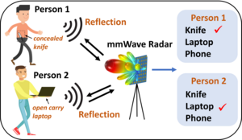

Xiangyu Gao
I am a research assistant and Ph.D. candidate in the department of electrical & computer engineering at the University of Washington, under the supervision of Prof. Sumit Roy at FUNLAB.
The goal of my research is to foster new-generation radar perception and multi-sensor fusion in autonomous driving and security fields.
I am happy to answer questions about dataset, code, or algorithms via email (xygao@uw.edu). Besides, I am actively looking for full-time job opportunities starts from 2023.
Selected highlights
2022
|
|
Deformable Radar Polygon: A Lightweight and Predictable Occupancy Representation for Short-range Collision Avoidance
Xiangyu Gao, Sihao Ding, Karl Vanas, Harshavardhan Reddy Dasari, Henrik Soderlund preprint 2022 |
|

|
Learning to Detect Open Carry and Concealed Object with 77GHz Radar
Xiangyu Gao, Hui Liu, Sumit Roy, Guanbin Xing, Ali Alansari, Youchen Luo IEEE Journal of Selected Topics in Signal Processing 2022 |
2021
|
|
Towards Millimeter-wave Radar Signal Processing and Learning-Based Applications
Xiangyu Gao General exam report 2021 |
|
|
Perception Through 2D-MIMO FMCW Automotive Radar Under Adverse Weather
Xiangyu Gao, Sumit Roy, Guanbin Xing, Sian Jin IEEE International Conference on Autonomous Systems 2021 |
|
|
Cognition in Automotive Radars
Sian Jin, Xiangyu Gao, Sumit Roy Next Generation Cognitive Radar Systems, IET Book 2021 |
|
|
MIMO-SAR: A Hierarchical High-resolution Imaging Algorithm for mmWave FMCW Radar in Autonomous Driving
Xiangyu Gao, Sumit Roy, Guanbin Xing IEEE Transactions on Vehicular Technology 2021 |
2020
|
|
RAMP-CNN: A Novel Neural Network for Enhanced Automotive Radar Object Recognition
Xiangyu Gao, Guanbin Xing, Sumit Roy, Hui Liu IEEE Sensors Journal 2020 pdf code |
|
|
Rodnet: Radar object detection using cross-modal supervision
Yizhou Wang, Zhongyu Jiang, Xiangyu Gao, Jenq-Neng Hwang, Guanbin Xing, Hui Liu Proceedings of the IEEE/CVF Winter Conference on Applications of Computer Vision 2020 pdf code |
2019
|
|
Experiments with mmwave automotive radar test-bed
Xiangyu Gao, Guanbin Xing, Sumit Roy, Hui Liu 53rd Asilomar Conference on Signals, Systems, and Computers 2019 pdf code |

|
Raw ADC Data of 77GHz MMWave radar for Automotive Object Detection
Xiangyu Gao, Youchen Luo, Guanbin Xing, Sumit Roy, Hui Liu IEEE dataport 2022 download readme link |
|
|
Raw ADC Data of 2D-MIMO MMWave radar for Carry Object Detection
Xiangyu Gao, Sumit Roy, Hui Liu, Youchen Luo, Guanbin Xing, 2022 download readme link |
|
|
|
|

Ph.D Candidate
Electrical and Computer Engineering
University of Washington
ECE building #307R
Paul Allen Center, 185 E Stevens Way NE AE100R
Box #352500
Seattle, WA 98195
Follow @william_gxy
CV
Google Scholar
Researchgate
GitHub
Linkedin